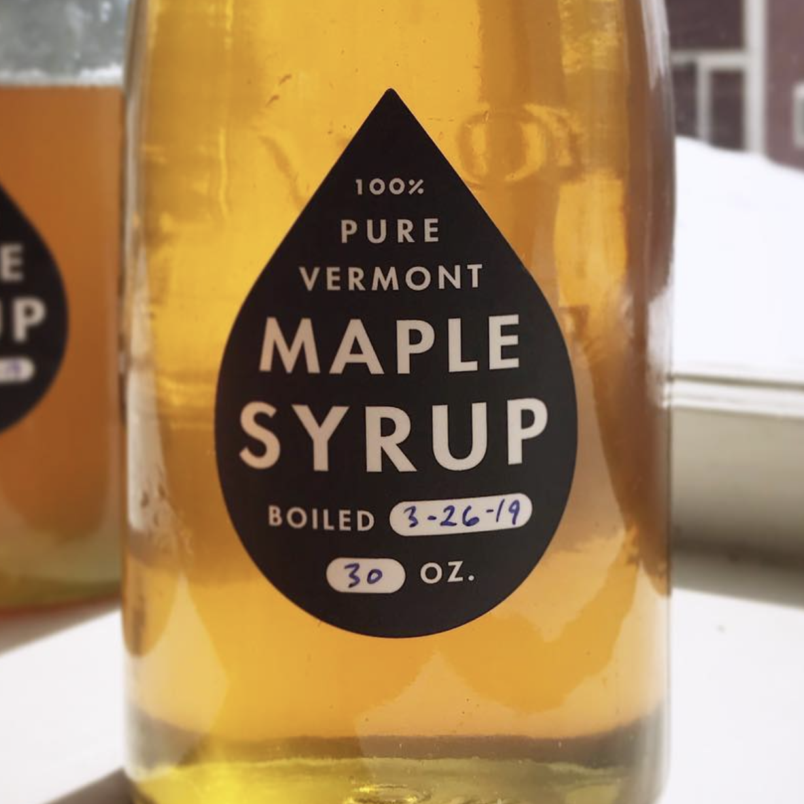

This is Joe
This is also Joe
It's a homeschool family, which means taking extra time for incubating curiosity and for joy-rides
Practicing curiosity is a lifelong gateway skill with no upper-bound
Joe's hobbies revolve around trees: planting them, cutting them down, making things out of wood

Here's a
microsite ↗
of carpentry projects. Woodworking is constructive — slow handcrafts build
embodied knowledge
and creative instincts
On
cv with work samples
you can read Joe's CV and some key projects, like the
most accessibile
video player on the internet
Accessibility is usability. Thinking about all the ways things get used by humans is good design.
On
cv with work samples
you can read Joe's CV and find out about his recent work at Coinbase and Backed
Joe has created a number of NFT projects that use onchain SVG, which you can see in this
gallery ↗
Crypto is important for humanity because economic freedom and access to financial tools are human rights.
If you're curious about that, get in touch and say hi. You can find Joe online on
cv with work samples,
twitter ↗, or
linkedin ↗ ☺